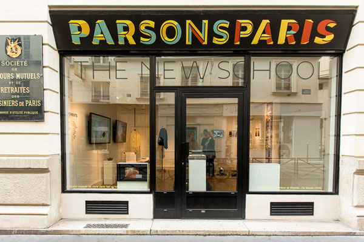

<!DOCTYPE html>
<html>
	<head>
		<title>Simple Leaflet with Image Popup</title>
		<meta charset="utf-8">
	    <meta name="description" content="Leaflet Example">
		<meta name="viewport" content="width=device-width, initial-scale=1">

		<script src="https://ajax.googleapis.com/ajax/libs/jquery/2.1.3/jquery.min.js"></script>
		<link rel="stylesheet" href="leaflet/leaflet.css" />
		<script src="leaflet/leaflet.js" type="text/javascript"></script>
		
	</head>
	<body>

			<div id="map" style="width: 600px; height: 400px"></div>
			<script>
				var map = L.map('map').setView([48.866549, 2.332928], 5);

				L.tileLayer('https://api.tiles.mapbox.com/v4/{id}/{z}/{x}/{y}.png?access_token={accessToken}', {
    				attribution: 'Map data &copy; <a href="http://openstreetmap.org">OpenStreetMap</a> contributors, <a href="http://creativecommons.org/licenses/by-sa/2.0/">CC-BY-SA</a>, Imagery © <a href="http://mapbox.com">Mapbox</a>',
    					maxZoom: 18,
    					id: 'csugrue.o0e126ha',
    					accessToken: 'pk.eyJ1IjoiY3N1Z3J1ZSIsImEiOiJjaWc4ZjBiancwNGdwdnhtN3N4cXM5ejQ5In0.nE4hXDLBV-oRJd-SeZOqDA'
					}).addTo(map);


				L.marker([48.866549, 2.332928]).addTo(map)
					.bindPopup("<b>Hello Parsons Paris!</b><br />").openPopup();

			</script>

			
	</body>
	
</html>